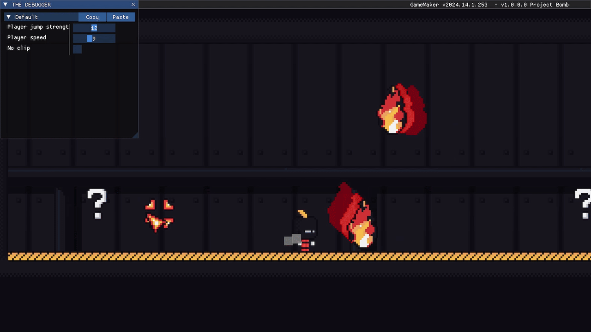

09/01/2026 - Procrastinei demais hoje. Só deu tempo de corrigir um bug envolvendo a câmera que ocorre ao morrer. Não me orgulho disso.
08/01/2026 - No momento em que estou escrevendo isso é de manhã e está chovendo deliciosamente, com aquele friozinho, cheiro de terra e etc. Emfim... Hoje teve bastante coisa... só que não porque programar demora muito (principalmente para mim que estou aprendendo e procastino muito). Fiz o primeiro inimigo do jogo: o zé foguinho! Brincadeiras a parte, é só um fogo que pode ficar parado, te seguir, orbitar o absoluto nada e flutuar, foi bem divertido programa-lo pois compreendi melhor as funções de seno e cosseno do qual nunca achei que seriam úteias há alguns ano atrás. Além disso também fiz uma cena para caso Nelvan encoste no fogo inspirada na tela de retry de FNF (Friday Night Funkin) e refiz o sprite da parede quebrável.
07/01/2026 - A cada dia que passa eu fico mais ansioso para o fim dessa gamejam, para ver o jogo completo, compartilhar com os meus amigos e para aprender mais iniciando novos projetos (e ganhar dinheiro, quem sabe né?). Hoje fiz uma imagem com o conceito do level design para a segunda parte do ato 1, eu não aguento mais!.

06/01/2026 - Corrigi um bug do qual mencionei ontem, envolvendo as músicas, que as faz terminar em um corte seco ao trocar para outra (sem fade out), melhorei a colisão das entrada/"portas" e principalmente: refiz todo o level design do início do ato 1 pois estava intankável de difícel (principalmente para uma primeira seção).
05/01/2026 - Tava lá eu fazendo a intro para o game quando apareceu um glitch do player poder se mover antes da intro pois de alguma forma a variável global playercontrol estava ativada quando não devia (e a música também não tocava, mas isso é o de menos), procurei e procurei no código do jogo até que descubri que no script da transição estava setando playercontrol para true (isso depois de uns 20 minutos). Ai como programar as vezes irrita! Tenho medo do que linguagens de nível inferior á essa (GML) podem me proporcionar de bugs.
04/01/2026 - Hoje fiz a seção dos créditos, acho que até agora foi a parte mais fácil de programar em contraste com fundo da tela de título que fiz ontem. Além disso, também melhorei o sistema de transição e adicionei efeito sonoro nele.
03/01/2026 - Decidi dar uma pausa no level design e fiz uma tela de título muito badass com uma intro em vídeo (acho que ninguém vai fazer ideia disso se não olhar nos arquivos) e comecei a produzir uma UI (Interface de Usuário).

02/01/2026 - Countinuo a fazer o level design, não aguento mais! Por que que fazer fases em jogos feitos para isso como Super Mario Maker é legal, mas construir as fases do meu próprio jogo não? Isso não faz sentido!